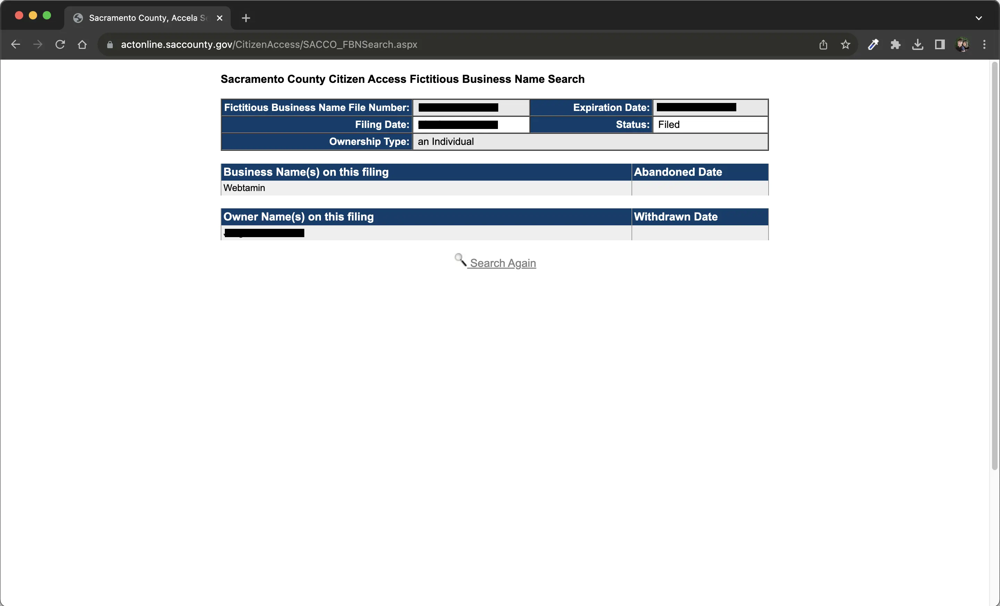

이 칼럼은 이전 글인 '웹사이트 제작 사기꾼들이 많은 3가지 이유'의
후속글입니다. 대표적인 웹 제작 사기들에 대한 자세한 설명은
이전글을 참고하시길 바랍니다. 그럼
웹사이트 제작 사기 피해를 예방하는 방법을 살펴보겠습니다.
첫째로 먹튀형 사기 예방책입니다.
먹튀형 사기란
적은 비용을 투자해 업체를 차린 후 고객의 선금을 챙기고
사라져버리는 유형입니다. 업체의 신뢰도를 확인하는 가장 간편한 방법이 있습니다.
고민중인 업체가 있으시다면 다음과 같이 해보세요.
- 해당 웹사이트에 접속합니다.
- 업체의 주소를 확인합니다.
- 주소가 속한 카운티의 홈페이지에서 상호명 검색 서비스를 찾습니다.
- 상호명(ex.FBN, DBA, etc.)을 조회하여 정상적으로 등록되어 있는지 확인합니다.
상호명을 찾으셨나요? 그렇다면 축하드립니다. 해당 업체가 먹튀형
사기꾼일 확률은 현저히 내려갔습니다. 하지만 이것만으로는 단정지을
수 없습니다. 다른 측면에서도 면밀하게 조사해봐야 합니다.
다음 방법으로는 이전 고객에게 문의해보기입니다. 대부분의 웹 제작업
홈페이지엔 이전 고객의 증언이나 후기란이 있습니다. 사례들 중에
하나를 선정하여 해당 웹사이트에 들어갑니다.
이후
연락처를 찾아 조사중인 업체의 서비스에 대해 문의를 합니다. 내용은 서비스 받은 업체명과 만족도에 관해 간단한
설문으로 구성합니다. 긍정적인 답변이 올 경우 업체의 신뢰성은 크게
상승합니다.

위 이미지는 캘리포니아 새크라맨토 카운티의 비즈니스명 검색 결과
화면입니다.
웹타민의 상호명이 정상 등록되어 있는 것을 확인하실 수 있습니다.
둘째로 양두구육형 사기 예방책입니다.
양두구육형이란
실력없는 개인이 타인의 작업물을 도용하여 전문가인 양 고객을
기만하는 유형입니다. 웹 제작 업체에 실린 포트폴리오의 진위를 어떻게 구별할 수
있을까요?
앞서 언급한대로 이전 고객에게 직접 문의할 수 있습니다. 하지만
답장이 올거라는 보장은 없습니다. 온다고 하더라도 얼만큼의 시간이
소요될지 알 수 없습니다. 좀 더 직접적으로 검증할 수 있는 방법이
있습니다.
웹 제작 업체에 이전 작업물에 대한 인증을 요구하는 것입니다.
일반적으로 웹 제작 업체는 고객의 결과물에 대한 작업 파일을
보관합니다. 사후 유지보수를 위해 필요하기 때문입니다. 이 작업
파일은 주로 소스 코드로 구성되어 있습니다.
소스 코드란 쉽게 말해 웹사이트의 내부 구조를 작성한 파일입니다.
이것을 이용하면 개인용 컴퓨터에서도 요청한 것과 똑같은 웹사이트를
불러올 수 있습니다. 그리고 제목, 본문, 글자 색상 등 눈에 보이는
것들을 손쉽게 변경할 수 있습니다.
이 부분이 잘 이해되지 않으셔도 전혀 문제 없습니다. 이런게 있다는
정도만 아는 것으로 충분합니다. 업체에 다음과 같이 요청하실 수
있습니다.
"포트폴리오에 대한 진위성 여부를 문의드립니다. 일부 소스 코드
수정으로 해당 웹사이트에 변경 사항이 반영되는 것을 짧은
동영상으로 녹화해주실 수 있을까요? 구글 드라이브 링크를 사용해
공유해주시면 감사하겠습니다."
이게 다 무슨 소리야 싶으실 겁니다. 그래서 아래 예시를
준비했습니다.

위 이미지의 오른쪽 부분은 웹타민 고객의 포트폴리오 웹사이트입니다.
왼쪽의 어두운 메모장 같은 부분은 소스 코드의 일부입니다. 이미지를
보시면 코드를 변경해 기존의 밝은 배경화면을 검정색으로 바꾸는
모습을 보실 수 있습니다. 이것을 통해
업체가 해당 웹사이트를 실제로 제작했음을 증명할 수 있습니다.
셋째로 바가지형 사기 예방책입니다.
바가지형이란
기본적인 서비스에 과도한 요금을 청구하거나 불합리적인 추가
비용을 요구하는 유형입니다.
예방책으로 가장 먼저 할 일은 발품을 파는 것입니다.
최소 3가지 이상의 업체에 견적을 요청해보시길 권해드립니다. 5군데 정도의 업체에 문의를 해보시면 평균
시세를 어느정도 알 수 있습니다. 견적은 일반적으로 제안서의 형태로
받게 됩니다. 주로 서비스에 대한 개괄적인 설명으로 구성되있습니다.
좀 더 격식있게 계약서를 제공하는 곳들도 있습니다. 어떤 형식이든
서비스에 대한 자세한 설명이 포함되어 있어야 합니다.
일말의 상세 정보 없이 결제를 유도하는 곳이 있나요? 1초도 망설이지
마시고 창을 닫으시길 바랍니다.
다음으로는 제안서 또는 계약서의 유무를 확인해보세요. 여기서 중요한
것은 정말로 '확인'해보셔야 합니다. 아무 웹사이트 회원가입 이용약관
읽듯이 대충 넘기시면 안 됩니다.
프로젝트에 대한 설명, 제작 기간, 제작 비용, 환불 조건, 유지보수
등 꼼꼼하게 읽어보셔야 합니다.
모든 조항이 합리적인지, 애매한 부분은 없는지, 의문점은 없는지
천천히 따져보셔야 합니다. 디자인, 기능, 페이지 수, 호스팅 비용
등에 추가적인 비용이 있는지 확인하셔야 합니다.
청구서에 이해되지 않는 비용이 있다면 물어보셔야 합니다. 계약서의
어떤 문장이 두루뭉술하게 느껴진다면 명확한 설명을 요구하셔야
합니다. 사소한 것이라도 확실하지 않은 부분이 있다면 문의하셔야
합니다.
계약서 검토를 성가시게 느낀다면 이후에 진짜로 성가신 일이 생길
수 있습니다.
위 스크린샷은 웹타민의 실제 고객 계약서 중 일부입니다. 개인정보를
보호하고자 고객명은 가렸습니다. 웹타민은 모든 웹사이트 제작에 있어
계약서를 작성합니다. 이후
제작사와 의뢰인의 상호 서명 후에 프로젝트를 진행합니다.
지금까지 웹 제작업의 대표적인 세 가지 사기들에 대한 예방책을
알아보았습니다. 정리하겠습니다. 웹사이트 제작 의뢰 사기 피해를
예방하려면 다음과 같이 하시길 바랍니다.
- 사업자 등록 확인하기
- 이전 고객에게 문의하기
- 업체에 포트폴리오 진위 검증 요청하기
- 최소 3가지 다른 업체 견적 알아보기
- 제안서 및 계약서 검토하기
눈에 보이는 것을 전부 믿어선 안 됩니다. 제작 업체가 제공하는
정보들의 신빙성을 꼼꼼히 따져보시길 바랍니다.